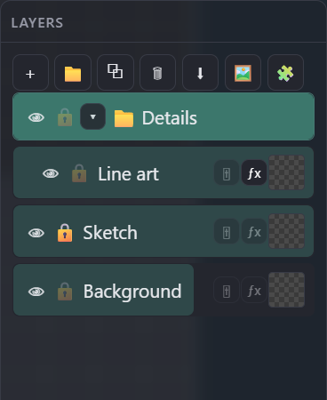
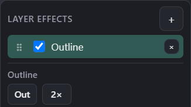

Panels
Layers
The layer stack, folders, non-destructive adjustments and effects — plus the drag gestures that pack opacity, reordering and duplication onto a single row without any extra UI.
← Interface overviewThe panel
A folder ("Details") holding a nested layer, plus two sibling layers — one locked, one with reduced opacity — to show every row state at once.

Add layer / new folder / duplicate / delete / merge down / import image as layer / insert canvas as sprite layer — left to right.
👁 toggles visibility (* or Ctrl+click isolates the active/clicked layer, hiding everything else); 🔒 blocks painting on that layer (or moving, for a reference layer). Both drag across rows to mass-toggle.
Drag horizontally for opacity, vertically to reorder; hold Shift while dragging to drop a copy. Double-click the name (or F2) to rename.
Blend mode, brightness/contrast/hue/saturation, and tint (color × amount, multiply) — non-destructive, applied on top of the layer's pixels. Drag this icon onto another non-group layer to move the adjustments; Ctrl+drag (Cmd on Mac) copies them.
Opens the effects popover for this layer (below). Drag this icon onto another non-group layer to move the effect stack; Ctrl+drag (Cmd on Mac) copies it. Middle-click either icon to mass-toggle every adjustment/effect on that layer without deleting them.
Both icons share the same three states, at a glance:
Layer effects popover
Click ƒx on any layer to open a stack of non-destructive effects — instances can repeat (e.g. two Outlines) and reorder by dragging the ⠿ grip.

Opens a menu to add Outline or Shadow. Adding the same type again stacks a second instance.
Checkbox enables/disables just this instance; ⠿ drags to reorder within the stack; × removes it.
Cycles Out / In / Both. Next to it (not pictured): Holes toggle (default on) — Out also paints a ring into enclosed empty pixels inside an island (donut hole, closed loop); off = Out only grows into true exterior. Inside still owns enclosed pockets; Holes only changes Out and the Out half of Both. Below the row: color, alpha, and thickness sliders.
Adds a second ring with its own thickness, color and alpha, independent of the first.
Shadow effect: offset X/Y, color and alpha — same non-destructive stack, no separate popover.
Gestures & shortcuts
- Drag horizontally — set opacity
- Drag vertically — reorder (also moves in/out of folders)
- Shift+drag — drop a copy (folders clone the whole nested tree)
- Double-click name, or F2 — rename
- Ctrl + wheel / Ctrl + right-drag over the Layers window — scale row previews (same feel as canvas zoom)
- At minimum height the preview becomes an icon; hover it for a temporary layer-image popup
- Click — toggle for that row
- * or Ctrl+click the eye — isolate (show only this layer + its ancestors; press again to restore)
- Drag across several icons — mass-toggle them together
- H / Y — flip selected layers horizontally / vertically (any tool; no need to switch to Move)
- * — isolate the active layer (toggle; same as Ctrl+click on its eye)
- Shift+G — new folder from the current selection, grouped in place
- Duplicate — copies the current multi-selection; a folder is a full nested copy (new ids)
- Ctrl+E — merge down (active layer, or a multi-selection, into the layer(s) below)
- F — frame the active layer (expands its folder path, scrolls it into view)
- Ctrl+V — paste an OS clipboard image as a new paint layer (fit to canvas, centered); a copied selection still pastes as a float
- Click — open the popover for that layer
- Drag onto another non-group layer — move adjustments or the effect stack (empty icons do not start a drag)
- Ctrl+drag (Cmd on Mac) — copy instead of move
- Middle-click — mass-toggle the entire stack on/off, without deleting anything